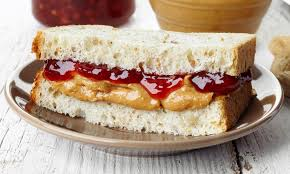

This delectable PBJ Sammy is a cheap way to satiate the
after-school munchies experienced by endeavoring teens. Even as an adult, this
sammich still hits the spot with nostalgic goodness. Enjoy the sweet pairing of
gelatinized fruit and pasted peanuts. This sticky sandwich pairs well with a cool
glass of Choccy Milk.

Ingredients
The following items are what one needs in order to prepare a peanut
butter and jelly sandwich. You can use whatever ingredients you want,
but do not deviate from this list. Seriously, don't do it.
- Peanut Butter is the first part
in the name and therefore the most important ingredient.
You can choose whatever kind you like as long as its creamy
and its the right brand. What's the right brand? As the
saying goes, "Choosy moms, chooose JIF." Well, my choosy mom
chooses Skippy. You definitely want Skippy.
- Jelly is the next most important ingredient.
Theres really no debate here. You will get Smucker's strawberry
jam. Anything else and you may as well throw the whole sandwich
away.
- Bread is the foundation of the sandwich.
It decides where this story begins and ends. You absolutely want fresh,
never frozen. I prefer whole grain, but you can take some liberties
here. Either way, make sure it is made without mango starch.
- Knives are necessary. Yes, that's a plural. Most everything else is self-explanatory
as far as what utensils and kitchenware to utilize. However
this item requires special note because it is so often overlooked. YOU
NEED THREE KNIVES. Anything less is barbaric. Let me explain: Peanut
Butter, Jam, Slice. Need I say more? Who really wants to open up their
jam and find a brown streak sliding down the center of the sugary
sweetness. The inverse would be cataclysmic too. For the slicing,
it is well known that clean edges are necessary for the optical
pleasure of consuming a legume paste and fruit coagulate layer loaf.
Steps to Enjoy Your Delicious PB&J
1. Acquire Ingredients
2. Open Ingredients
3. Peanut Butter Your Bread
4. Jam Your Other Bread
5. Mash 'Em Together
6. Slice and Slash
7. Enjoy!
Return to Main